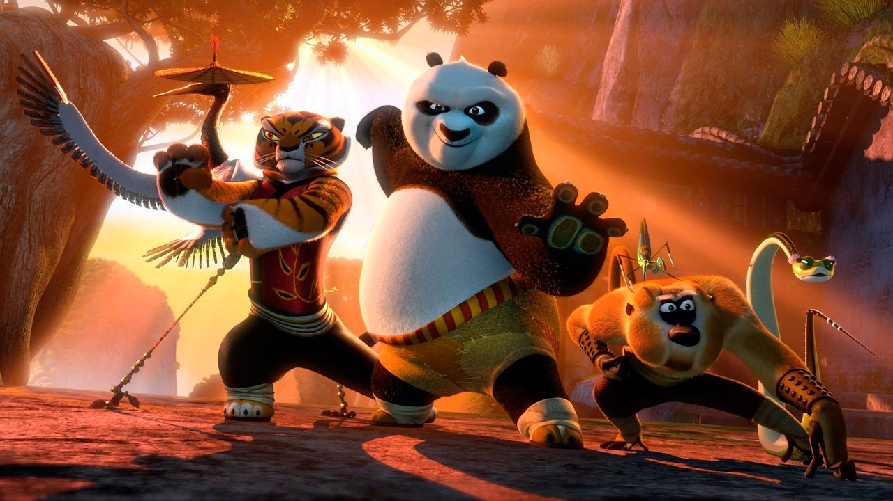

About Po
He is an anthropomorphic giant panda in his 20s, who is improbably chosen as the Dragon Warrior. He is the adoptive son of Mr. Ping and is one of Master Shifu's students. Po is also the prophesied Dragon Warrior, as well as the warrior of black and white.
Po and his friends
Po's Characteristics
- Po is friendly, kind, and crazy about Kung Fu
- He loves food
- He cares about the Five enormously
Po's Friends
Po is best friends with Tigress, Monkey, Mantis, Viper, and Crane. Despite Po's embarrasing behaviour, the Furious Five loves him and always helps him if he is in trouble. Click on the links below to read more about them: